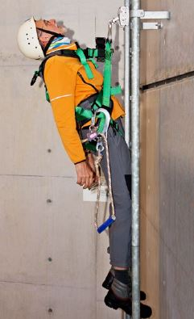

Das Hängetrauma, auch Hängesyndrom genannt, kann bei längerem, bewegungslosem Hängen in einem Auffanggurt, z. B. nach einem Sturz von einem hochgelegenen Arbeitsplatz, zustande kommen. Aufgrund von Bewegungslosigkeit fehlt die Funktion der so genannten "Muskelpumpe" durch die Beinmuskulatur, wodurch der Rückstrom des Blutes aus den Beinen vermindert wird bzw. zum Erliegen kommt. Es kann aufgrund unterschiedlicher pathophysiologischer Mechanismen zu einem (Kreislauf)-Schock kommen.
Bei bestimmungsgemäßer Benutzung von persönlichen Schutzausrüstungen gegen Absturz ist das Auftreten eines Hängetraumas heute sehr unwahrscheinlich. Dafür ist eine sachgerechte Auswahl, das exakte Anpassen des Gurtes mit der Durchführung eines Hängeversuchs (s. DGUV Regel 112-198 "Benutzung von persönlichen Schutzausrüstungen gegen Absturz") erforderlich. Darüber hinaus ist die Planung und Vorbereitung entsprechender Rettungsmaßnahmen (s. DGUV Regel 112-199 "Retten aus Höhen und Tiefen mit persönlichen Absturzschutzausrüstungen") notwendig.
Das Hängetrauma kann bei Personen auftreten, die nach einem Sturz längere Zeit "hilflos" im Auffanggurt hängen und z. B.
Dies gilt analog bei der Nutzung von Steigschutzeinrichtungen.
Verschiedene Faktoren begünstigen das Auftreten eines Hängetraumas, u. a.:

Abb. 1 In einer Steigschutzeinrichtung bewegungslos hängende Person